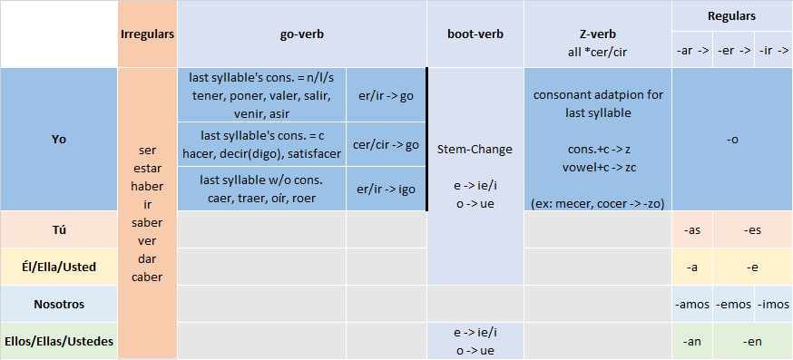

Presente (Present Indicative)
The direct correspondent of the Present Indicative in English is the Simple Present. Or we can say, any English expression in Simple Present corresponds to the Present Indicative in Spanish:
Hablo español. -> I speak Spanish.
¿Juegas al fútbol? -> Do you play football?
However, in daily spoken language, the Present Indicative is also commonly used to express the meaning of the Present Continuous in English (usually understood with context), for example:
Ahora mismo hablo español. -> Right now, I am speaking Spanish.
The verb in Present Indicative needs to be conjugated according to the subject person. For example, the conjugation of the verb hablar (speak) after different persons is as follows.
| Spanish | English |
|---|---|
| Yo hablo español | I speak Spanish. |
| Tú hablas español | You speak Spanish. |
| Él / Ella habla español | He/She speaks Spanish. |
| Nosotros hablamos español | We speak Spanish. |
| Ellos / Ellas hablan español | They speak Spanish. |
Note that speak in English on the right also changes after he/she, which is the "verb third person singular adds s" rule we are familiar with. This is actually a "living fossil" of English verb conjugation: Old English also had to be conjugated according to person like Spanish on the left, but only the third person singular conjugation remains now, as well as the conjugation of the irregular verb be (am/are/is). And Spanish verb person conjugation can be understood as the "full version" preserved from history.
The most standard verb conjugation rule is to replace the ending of the verb infinitive (usually -ar/-er/-ir) with the corresponding conjugation ending according to the person. The standard ending replacements are as follows (blank space in the table indicates the same as the left):
| -AR | -ER | -IR | |
|---|---|---|---|
| ejemplo: | hablar | comer | vivir |
| Yo | -o | ||
| Tú | -as | -es | |
| Él/Ella/Usted | -a | -e | |
| Nosotros | -amos | -emos | -imos |
| Ellos/Ellas/Ustedes | -an | -en |
However, there are a large number of irregular or "semi-regular" conjugation forms in Spanish, which is the focus of my next explanation.
I will condense all the conjugation rules of the Present Indicative into the following Present Indicative Conjugation Matrix. As long as you remember this "Presente Matrix", you will remember all the conjugation rules of the Present Indicative (including the irregular parts).

Next, we will explain each specific rule in this table from left to right.
1. Completely Irregular Verbs
There are a total of 8 completely irregular conjugation verbs in the Present Indicative, all of which are high-frequency verbs:
| Ser (be) | Estar (be) | Haber (have) | Ir (go) | Dar (give) | Ver (see) | Saber (know) | Caber (fit) | |
|---|---|---|---|---|---|---|---|---|
| Yo | Soy | Estoy | He | Voy | Doy | Veo | Sé | Quepo |
| Tú | Eres | Estás | Has | Vas | Das | Ves | Sabes | Cabes |
| Él/Ud. | Es | Está | Ha | Va | Da | Ve | Sabe | Cabe |
| Nosotros | Somos | Estamos | Hemos | Vamos | Damos | Vemos | Sabemos | Cabemos |
| Ellos/Uds. | Son | Están | Han | Van | Dan | Ven | Saben | Caben |
In fact, these 8 verbs are not completely ruleless. They can be further "regularized" according to the following table. The green cells represent standard rules, yellow cells represent "local rules" or minor changes, and only the orange parts are completely ruleless.
|
soy
-oy rule
|
estoy
-oy rule
|
he
a -> e
|
voy
-oy rule
|
doy
-oy rule
|
veo
Insert e
|
sé
No rule
|
quepo
No rule
|
|
eres
No rule
|
estás
Lock stress
|
has | vas | das | ves | sabes | cabes |
|
es
No rule
|
está
Lock stress
|
ha | va | da | ve | sabe | cabe |
|
somos
No rule
|
estamos |
hemos
a -> e
|
vamos | damos | vemos | sabemos | cabemos |
|
son
No rule
|
están
Lock stress
|
han | van | dan | ven | saben | caben |
The table above uses a "Stunt Trick": for some irregular verb conjugations, if you first transform the verb into another word (haber -> har, ir -> var), you will find that its conjugation becomes much more "regular" immediately. This is not strictly a logic-less "pure trick". In many cases, this "transformation that makes conjugation look much more regular" may be the "historical prototype" (or its variant) of the word, and the conjugation of the word is actually derived from its "historical prototype" based on rules. It's just that later the infinitive changed, but the conjugation did not change with it. This "space-time dislocation" makes the conjugation appear very "irregular". We will also use this "Stunt Trick" in verb conjugations of other tenses later.
Stunt Trick:First transform the verb into a virtual hypothetical "stunt double" (ser -> erar), and apply a unified set of rules based on the stunt double, then you can obtain the originally irregular verb conjugation in a "regularized" way.
Ser v.s. Estar
From the table above, we can see that the copula be in English corresponds to two words in Spanish: ser and estar. They express two different kinds of "being". Ser expresses the intrinsic, fixed, and permanent attributes of the subject, while estar expresses the state of the subject at the moment in the sentence. If you know about computer programming languages, then ser expresses something similar to a constant, while estar expresses something similar to a variable.
There is a rhyme to help everyone quickly memorize the difference in usage between the two:
| SER | ESTAR |
|---|---|
| DOCTOR | PLACE |
|
Description
Occupation
Characteristic
Time
Origin
Relationship
|
Position
Location
Action (Progressive Tense)
Condition
Emotion
|
You can understand the difference between the two through the following comparison:
| Example | Meaning | Analysis | |
|---|---|---|---|
| Ser | Yo soy profesor. | I am a teacher. | Occupation/Identity (This is part of me) |
| Estar | Yo estoy enfermo. | I am sick. | Health State (Temporary, will change) |
| Ser | Ella es inteligente. | She is smart. | Inherent Trait (Character description) |
| Estar | Ella está triste. | She is sad. | Emotion (Temporary mood) |
| Ser | Nosotros somos de China. | We are from China. | Nationality/Origin (Immutable root) |
| Estar | Nosotros estamos en Nueva York. | We are in New York. | Current Physical Location (GPS Coordinates) |
| Ser | Son las tres. | It is 3 o'clock. | Time (Time belongs to definition) |
| Estar | El libro está en la mesa. | The book is on the table. | Object Location |
Below is a comparison example of using contrasting meanings with the same adjective after ser and estar:
| Ser - Essence/Definition | Estar - State | Core Difference |
|---|---|---|
| Soy feliz. I am a happy person. |
Estoy feliz. I am happy (right now). |
Character vs. Mood Former defines your nature Latter describes current emotion |
| Eres guapo. You are handsome. |
Estás guapo. You look handsome (today). |
Looks vs. Perception Former is a comment on looks Latter is a compliment on current state |
| Es nervioso. He is a nervous person. |
Está nervioso. He is nervous (right now). |
Personality vs. State Former refers to sensitive/anxious personality Latter refers to feeling nervous now |
You can even use opposite adjectives after ser and estar in the same sentence, for example:
Soy feliz, pero hoy no estoy feliz.
(I am a happy person, but I am not happy today.)
2. Go-verbs
This group of verbs we call go-verbs has a total of 13 verbs, all are -er/-ir verbs. The "special rule" of Go-verbs is that the ending of their yo conjugation is not a simple replacement of -er/-ir, but changing the entire last syllable to go, but according to the consonant of the original last syllable, it is divided into the following three cases:
| Consonant of last syllable | Word list | Ending replacement method | Note |
|---|---|---|---|
| n/l/s | tener, poner, valer, salir, venir, asir | er/ir -> go | Keep consonant, replace er/ir |
| c | hacer, decir(digo), satisfacer | cer/cir -> go | Replace entire syllable with go. Actually because c and g have the same sound, so they are merged |
| No consonant | caer, traer, oír, roer | er/ir-> igo | Replace er/ir, but insert i before go |
The above is a summary of rules, and the specific results after conjugation are as follows:
| Infinitive | English | Yo Conjugation |
|---|---|---|
| Tener | have | Tengo |
| Poner | put / place | Pongo |
| Valer | be worth | Valgo |
| Salir | go out / exit | Salgo |
| Venir | come | Vengo |
| Asir | grasp / seize | Asgo |
| Hacer | do / make | Hago |
| Decir | say / tell | Digo (e -> i) |
| Satisfacer | satisfy | Satisfago |
| Caer | fall | Caigo |
| Traer | bring | Traigo |
| Oír | hear | Oigo |
| Roer | gnaw | Roigo |
Note that go-verbs only execute "special rules" for their yo conjugation, while other conjugations follow standard rules or "semi-standard rules", i.e., continuing to execute to the right along the Present Indicative Conjugation Roadmap.
Haber v.s. Tener
Notice that both tener and haber correspond to English have. This is actually because English have is a multifunctional word, and its different grammatical functions are disassembled into different words in Spanish. We show this disassembly in the table below. Note that we also include the English there is structure in this table, because it corresponds to the impersonal form hay (=ha y) of the third person conjugation of haber in Spanish.
| English Structure | English Example | English Grammar Function | Spanish Correspondent | Spanish Example |
|---|---|---|---|---|
| have | I have eaten. | Perfection auxiliary verb | haber | He comido. |
| have | I have a car. | "Possess" | tener | Tengo un coche. |
| have to | I have to go. | "Must/Have to" | tener que | Tengo que ir. |
| There is/are | There is a car. | Existence | haber (hay) | Hay un coche. |
Note: "He comido." in the table above is actually the Present Perfect in Spanish. This tutorial will not specifically teach this tense, because the Simple Past can be used instead in daily use. But as long as you remember this form of haber+past participle (verb infinitive ending changed to ado/ido), you can recognize and understand the Present Perfect in reading. In other words, as long as you see the structure of he/has/ha/hemos/han + *ado/ido, you know this is the Present Perfect in Spanish. If you can recognize the infinitive form through the past participle, then you can completely understand the meaning of this sentence.
3. Boot-verbs
Next is a large class of verbs we call boot-verbs. The "special rule" for Boot-verbs is that, except for nosotros/vosotros conjugations, their stem undergoes vowel substitution (stem-change, also called vowel fission). These verbs are generally "fragile". When the stress falls on the stem, the vowel in the stem cannot withstand the pressure and undergoes deformation.
It is called boot-verbs because the conjugations involved are the yellow parts in the diagram, resembling a boot, hence boot verbs.
| Yo | Nosotros |
| Tú | Vosotros |
| Él/Ella/Usted | Ellos/Ellas/Ustedes |
There are three types of stem-change for Boot-verbs:
e -> ie
o -> ue
e -> i
The following table lists the third person singular conjugation of common boot-verbs, showing how they undergo vowel substitution (stem-change) in conjugation. The vowel substitutions for other three conjugations (yo/tú/ellos) are the same.
| e -> ie | él conjugation | o -> ue | él conjugation | e -> i | él conjugation |
|---|---|---|---|---|---|
| querer (want) | quiere | poder (can) | puede | pedir (ask/order) | pide |
| pensar (think) | piensa | dormir (sleep) | duerme | servir (serve) | sirve |
| empezar (start) | empieza | volver (return) | vuelve | repetir (repeat) | repite |
| entender (understand) | entiende | encontrar (find) | encuentra | seguir (follow) | sigue |
| perder (lose) | pierde | recordar (remember) | recuerda | conseguir (get) | consigue |
| preferir (prefer) | prefiere | almorzar (lunch) | almuerza | vestir (dress) | viste |
| sentir (feel) | siente | contar (count/tell) | cuenta | reír (laugh) | ríe |
| cerrar (close) | cierra | costar (cost) | cuesta | elegir (choose) | elige |
| mentir (lie) | miente | doler (hurt) | duele | medir (measure) | mide |
| sentar (seat/fit) | sienta | morir (die) | muere | despedir (fire/bye) | despide |
| despertar (wake) | despierta | mostrar (show) | muestra | competir (compete) | compite |
| comenzar (start) | comienza | mover (move) | mueve | corregir (correct) | corrige |
| recomendar (recommend) | recomienda | probar (try/taste) | prueba | freír (fry) | fríe |
| regar (water) | riega | soñar (dream) | sueña | ||
| divertir (amuse) | divierte | volar (fly) | vuela | ||
| hervir (boil) | hierve | llover (rain) | llueve | ||
| confesar (confess) | confiesa | resolver (resolve) | resuelve | ||
| defender (defend) | defiende | torcer (twist) | tuerce | ||
| encender (ignite) | enciende | cocer (cook) | cuece | ||
| tener (have) | tiene | ||||
| venir (come) | viene | jugar (play) | juega | decir (say) | dice |
Note the three special cases underlined in the last two rows of the list:
tener/venir are go-verbs mentioned earlier, but also stem-changing verbs. The two do not conflict (see the "roadmap" earlier). The Go-verb rule only affects yo conjugation, and after executing the "go rule", no other rules are executed (tener -> tengo, venir -> vengo);
decir is also a go-verb, but it is the only go-verb that also undergoes e -> i substitution in yo conjugation;
jugar is the only word with u -> ue substitution, temporarily classified in the o -> ue category.
Conjugation of Derivatives
The verbs listed in the table above are all "primitive verbs" (verbos primitivo). Derivatives produced by adding prefixes to these primitive verbs also inherit the same rules. For example, sonreír (smile) is derived from reír (laugh), so it also inherits the boot rule of reír (executes the same stem-change): sonreír -> sonríe.
A few more examples of derivative conjugations are as follows:
| Primitive Verb | Conjugation | Derivative 1 | Conjugation | Derivative 2 | Conjugation | Derivative 3 | Conjugation |
|---|---|---|---|---|---|---|---|
| tener | tengo tienes tiene |
mantener maintain |
mantengo mantienes mantiene |
contener contain |
contengo contienes contiene |
detener detain |
detengo detienes detiene |
| venir | vengo vienes viene |
convenir agree |
convengo convienes conviene |
prevenir prevent |
prevengo previenes previene |
intervenir intervene |
intervengo intervienes interviene |
| poner | pongo pones pone |
componer compose |
compongo compones compone |
proponer propose |
propongo propones propone |
suponer suppose |
supongo supones supone |
3. Z-verbs
After "go-verb rules" and "boot-verb rules", theoretically there are no other "special rules". But notice that the ending of yo conjugation is -o. If -er/-ir is replaced by -o, this is a "cross-group vowel substitution" (from e/i group crossing to a/o/u group), which may trigger Consonant Passive Adaptation. However, the "Consonant Passive Adaptation" for Presente is slightly more complex, divided into two cases:
If cer/cir follows a consonant, standard "Consonant Passive Adaptation" is performed: simply change c -> z according to the Variable Consonant Table;
If cer/cir follows a vowel, it is not standard "Consonant Passive Adaptation", but c -> zc (here the consonant changes, becomes /sko/). (There are two exceptions: mecer -> mezo, cocer -> cuezo)
After all the above rules are executed, what remains is the standard conjugation rules according to -ar/-er/-ir endings.
We list the Present Indicative Conjugation Matrix below again, and review the usage of "Presente Matrix".
To get the Present Indicative Conjugation of any verb, we only need to execute the logic of "Presente Matrix" from left to right:
First, if it belongs to the 8 "completely irregular verbs", handle it separately;
If we want the yo conjugation, see if this word belongs to a go-verb (total 13). If yes, obtain its yo conjugation according to the go-verb rule;
Then we see if this word belongs to a boot-verb. If yes, then we execute stem-change (but note that stem-change does not apply to nosotros/vosotros conjugations);
Finally, we execute the ending replacement for regular verb conjugation, but in the process of ending replacement for yo conjugation (ie/ir -> o), Consonant Passive Adaptation (see Z-verb rule) may be triggered.